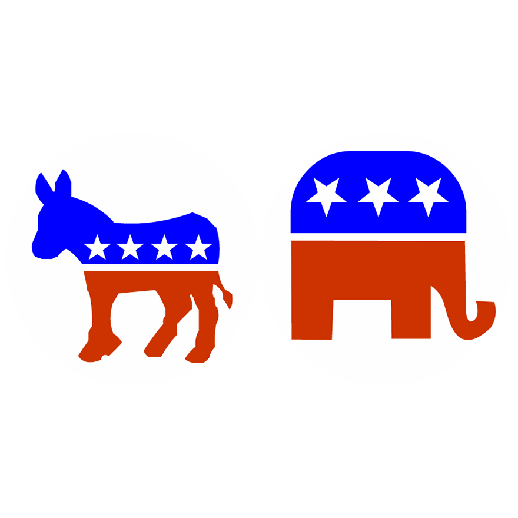

We wondered whether you can determine the political party of members of Congress based on their appearance.
So we made this game for you to try for yourself. You'll see pictures of members of the 116th Congress, with buttons for you to indicate your guess about their party affiliation.
When you've guessed them all (or when you get tired), you can use the menu icon to navigate to the Results screen. On that screen, you can also clear your previous guesses and restart.
